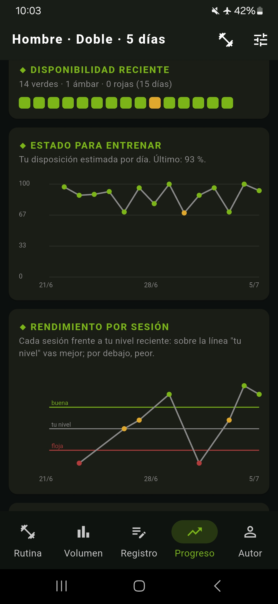
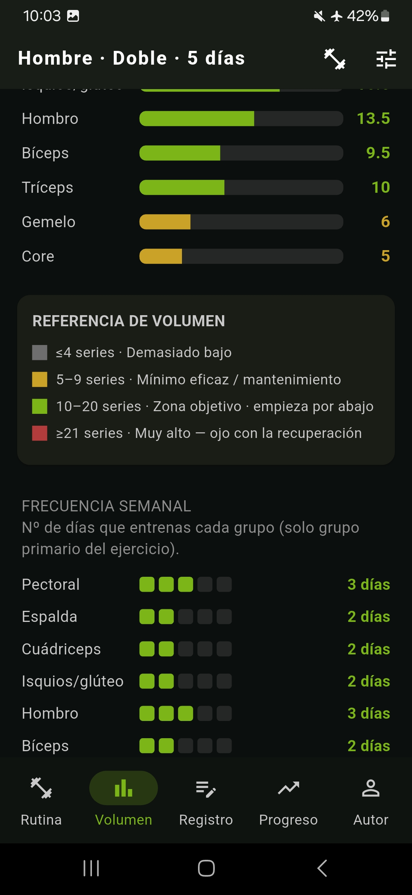
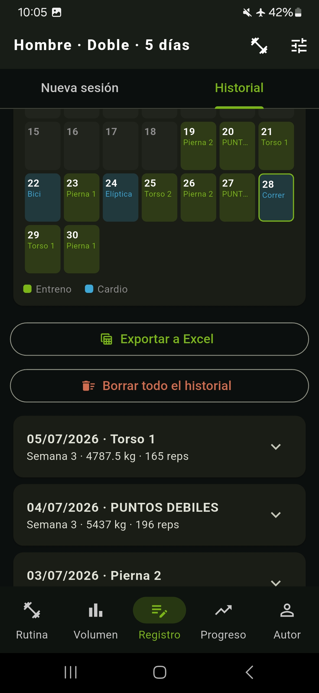

Si cumples, progresas
Cuando completas el objetivo con margen suficiente, la app calcula una subida adecuada.
App de entrenamiento de fuerza adaptativo
TrueLift crea tu rutina, registra tus series y calcula cuándo subir peso, cuándo mantener y cuándo descargar, evaluando tu rendimiento y estado de recuperación.
Versión básica incluida
La versión básica incluye rutina base, registro, progresión automática, visualización de volumen, progreso y herramientas. Muchas apps solo registran lo que haces. TrueLift lo evalúa y programa tu próxima sesión en función de tu rendimiento.
Versión básica · progresión incluida
TrueLift no sube kilos por calendario ni por intuición. Analiza si has cumplido las repeticiones objetivo, el RIR previsto y tu rendimiento reciente. Si toca progresar, calcula un salto proporcionado al ejercicio y factible con tu material. Si no toca, mantiene la carga para que consolides antes de volver a subir.

Algoritmo base incluido
En la versión básica, TrueLift ya decide cuándo subir, mantener o consolidar. En PRO, añade una segunda capa de control con recuperación, molestias, VFC, fase de dieta y rendimiento reciente.
Cuando completas el objetivo con margen suficiente, la app calcula una subida adecuada.
Si faltan repeticiones o el RIR no acompaña, mantiene la carga para no forzar una progresión innecesariamente agresiva.
Con autorregulación activa en PRO, TrueLift puede bloquear subidas, bajar intensidad o anticipar una descarga para gestionar mejor la fatiga.
Todas las versiones · algoritmo sin caja negra
TrueLift no genera tu entrenamiento con un modelo generativo opaco y variable. Usa un algoritmo de progresión estable, transparente y reproducible: mismas entradas, misma lógica, misma decisión.
Entrenar bien no necesita ocurrencias. Necesita un plan, buenos registros, sobrecarga progresiva y ajustes precisos cuando el rendimiento cambia.
El algoritmo ha sido ajustado, testeado y validado por usuarios experimentados y entrenadores.
Sin IA improvisando. Con un algoritmo estable, explicable y reproducible.
La lógica de progresión no cambia de criterio entre sesiones.
Cada decisión se basa en señales medibles: rendimiento y RIR; en PRO, también recuperación y fase de dieta.
Con los mismos datos, TrueLift aplica la misma lógica. Sin improvisación.
Versión básica incluida
La versión básica no es una demo vacía: incluye rutina base, registro, progresión automática, análisis de volumen, progreso, herramientas y copias de seguridad.
Parte de una rutina estructurada según seas hombre o mujer y los días que entrenas (de 2 a 5). Elige el sistema de progresión en función de tu nivel y sustituye cada ejercicio según el material disponible, tus preferencias o tus necesidades.
Elige la carga de tu primera serie y TrueLift ajusta las siguientes referencias de trabajo. Después compara la sesión actual con tu rendimiento anterior y programa la carga de la próxima sesión.
Visualiza series efectivas por grupo muscular y frecuencia semanal con una interfaz clara para detectar si te quedas corto o te estás pasando.
En la pestaña Progreso podrás consultar tonelaje de sesión, e1RM estimado, rendimiento, marcas personales e informe mensual listo para guardar o compartir.
Calculadora de discos, series de calentamiento, cronómetro de descanso, registro de cardio y opción de compartir tus entrenamientos y marcas de forma sencilla.
Tu rutina y tu historial viven en tu móvil. Puedes exportar y restaurar copias de seguridad para no perder tu progreso si cambias de dispositivo.


Versión básica incluida
TrueLift abre el registro con la sesión que toca, el objetivo de series, repeticiones y RIR, lo que hiciste la vez anterior y la carga indicada para cada ejercicio. Llegas al gimnasio, abres la app y te centras en lo importante: tu entrenamiento.
Abre la pestaña Registro y empieza por la sesión que toca.
Confirma carga y RIR, e introduce reps serie a serie mientras entrenas.
Guarda la sesión y recibe feedback sobre el entrenamiento de hoy.
TrueLift PRO · personalización y autorregulación
Hasta aquí, la versión básica. PRO desbloquea la personalización completa de tu rutina y añade una segunda capa de control: estado diario, sueño, estrés, molestias, VFC, fase de dieta, rendimiento reciente, descarga guiada y descarga automática.
No solo registra tu entrenamiento: ajusta la progresión a cómo estás rindiendo y recuperando. Prueba todas las funciones PRO durante 28 días. Después, accede a PRO para siempre con un único pago.
Probar PRO gratisElige tu distribución, patrones de movimiento y ejercicios; ajusta series, RIR, repeticiones y descansos.
La app tiene en cuenta tu descanso nocturno, estrés, molestias, energía, VFC y rendimiento reciente para decidir el próximo paso.
Modula la respuesta de la progresión en función de tu nutrición: déficit, mantenimiento o superávit.
Activa una descarga guiada cuando lo necesites o deja que TrueLift la proponga al detectar fatiga acumulada o bajón de rendimiento.
Gratis vs PRO
La versión gratuita ya permite entrenar en serio: rutina base, registro, progresión automática, volumen, progreso y herramientas. PRO está pensado para quien quiere personalizarlo todo y ajustar la progresión a su recuperación real.
| Función | Gratis | PRO |
|---|---|---|
| Rutina prefijada y progresión automática | ||
| Registrar sesiones y cardio | ||
| Calculadora de discos y calentamiento | ||
| Cronómetro de descanso con alarma | ||
| Volumen y frecuencia semanal | ||
| Progreso, marcas personales y rendimiento | ||
| Compartir entrenamiento e informe mensual | ||
| Copias de seguridad | ||
| Cambiar un ejercicio por otro | ||
| Descarga guiada manual (deload) | ||
| Configurar series, RIR, reps y descanso | ||
| Cambiar el patrón de un ejercicio | ||
| Renombrar las sesiones de la rutina | ||
| Crear ejercicios e importar rutina desde Excel | ||
| Autorregulación por sueño, estrés, molestias y VFC | ||
| Progresión ajustada a déficit, mantenimiento o superávit | ||
| Descarga automática por fatiga o caída de rendimiento |
En la versión gratuita la fase de la dieta queda fijada en normocalórica y la autorregulación, la VFC y la descarga guiada están desactivadas. Todo lo demás funciona con normalidad.
Capturas de pantalla · básica y PRO
Pantallas de la app: volumen, registro, progreso, historial y funciones PRO.
Preguntas frecuentes
Incluye rutina prefijada, sustitución de ejercicios, registro de sesiones y cardio, progresión automática, visualización de volumen, progreso y marcas, compartir entrenamientos y copias de seguridad.
La versión PRO es para ti si quieres personalizar completamente tu rutina, usar autorregulación para ajustar la progresión y acceder a herramientas específicas como creación de ejercicios, importación desde Excel, fase de dieta, descarga guiada y descarga automática.
No. PRO es un pago único. Una vez comprado, queda asociado a tu cuenta de Google y puedes restaurarlo si cambias de móvil o reinstalas la app.
RIR significa repeticiones en reserva. Un RIR 2 indica que podrías haber hecho dos repeticiones más antes de fallar. Es una señal clave porque no solo mide lo ejecutado, sino también el margen real que te quedaba.
No. Es una variable más. Si no tienes VFC, la autorregulación funcionará en base a tu estado de recuperación, tus molestias y tu rendimiento reciente.
Una app de registro guarda lo que haces. TrueLift usa ese registro para calcular tu progresión. En PRO, además, puede modular la intensidad, ajustar la carga y sugerir descargas según tu estado.
Las rutinas de la versión gratuita tienen un enfoque más orientado a hipertrofia que a fuerza pura. En PRO puedes configurar tu rutina para priorizar adaptaciones de fuerza si ese es tu objetivo.
Sí. TrueLift calcula pesos cargables según tus discos, microcargas, mancuernas y material disponible.

Una app hecha por y para gente que entrena de verdad: todo lo necesario para progresar con criterio, sin ruido ni funciones de relleno que te distraigan de tu objetivo.